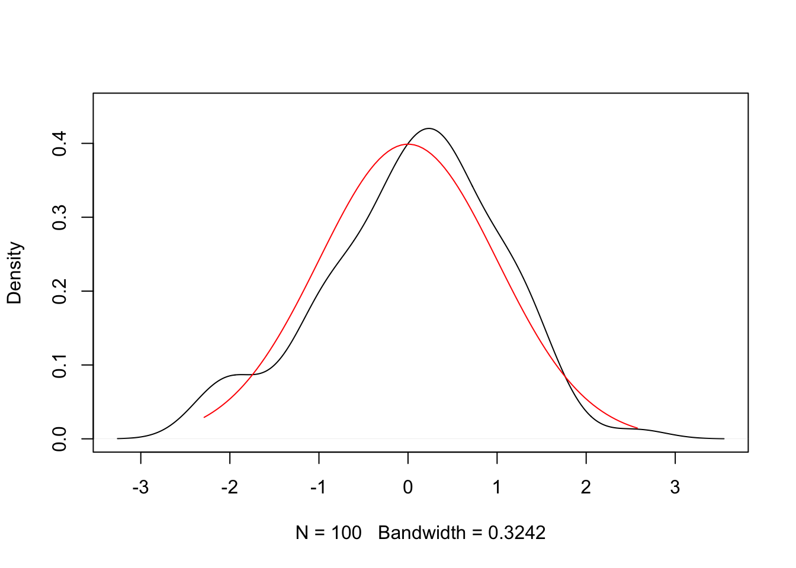

Chapter 12 Problem Set 3: Power and Size
The model used in the simulation has the following structure:
There is one constant and 9 covariates in the model and there are ten outcomes, all generated randomly.
\[x_{i1}=1, x_{i2},...,x_{i10} \sim \mathcal{N}(0,\mathbf{1})\]
\[ y_{i1}...,y_{i10} \sim \mathcal{N}(\mathbf{0},\mathbf{1})\]
Assume initially that \(n=1000\) and \(\boldsymbol{\varepsilon}_i\sim\mathcal{N}(\mathbf{0},\mathbf{1})\)
12.1 Size
For one random draw, regress each \(y_i\) on all covariates and calculate \(\hat{\beta}\). Test each coefficient for significance and record the number of coefficients that are estimated to be significant at the 5% level. What would be the expected number?
set.seed(20)
###Set the numerical values######
N=1000
k=10
p=10
alpha<-0.05
X.1 <- rep(1, N)
X.2<-rnorm(N*(k-1))
X <- cbind(X.1, matrix(X.2,nrow=N,ncol=k-1))
Beta<-matrix(0,p,k)
P<-nrow(Beta)
Q<-ncol(Beta)
###Concentrate on the relevant starts and stops
E <- matrix(rnorm(N*p,0,1),N, p, byrow=TRUE)
Y<-X%*%Beta+E
##alternatively: Y.1<-rnorm()
##Solving for beta hat###
yy<-dim(Y)
length.y<-yy[2]###gives the number of output variables
xx<-dim(X)
length.x<-xx[2]
###The beta matrix gives the dimension of the original problem###
beta.hat<-mat.or.vec(length.x, length.y)
d1<-mat.or.vec(length.x, length.y)
t<-mat.or.vec(length.x, length.y)
y.hat<-mat.or.vec(N,length.y)
eps.hat<-mat.or.vec(N,length.y)
for(i in 1:length.y)
{
beta.hat[,i]<-solve(t(X) %*% X) %*% t(X) %*% Y[,i]
y.hat[,i]<- X %*% beta.hat[,i]
eps.hat[,i]<-Y[,i]-X %*% beta.hat[,i]
se<-(t(eps.hat[,i])%*%(eps.hat[,i]))/(N-length.x)
cov<-se[1]*solve(t(X) %*% X)
d1[,i]<-sqrt(diag(cov))
t[,i]<-beta.hat[,i]/d1[,i]
}
t<-as.matrix(t)
###critical values from the t-distribution###
t.crit_alpha<-abs(qt(alpha/2, N-length.x))
###compare the t statistic values: ###
sig_alpha<-abs(t)>t.crit_alpha
######Record the number significant coefficients#####
FP<-sum(sig_alpha)12.2 Simulation Study: Size
Write the code above into a function that returns the sum of significant coefficients and repeat this for varying sample sizes, ranging from 500 and increase to 50000 in an interval spacing of your choice. Record your results in a vector. What is the expected number of rejected hypotheses in this scenario? Plot the number of rejected hypotheses against the sample size. Summarize your results.
simu_data<-function(N){
k=10
p=10
alpha<-0.05
X.1 <- rep(1, N)
X.2<-rnorm(N*(k-1))
X <- cbind(X.1, matrix(X.2,nrow=N,ncol=k-1))
Beta<-matrix(0,p,k)
P<-nrow(Beta)
Q<-ncol(Beta)
###Concentrate on the relevant starts and stops
E <- matrix(rnorm(N*p,0,1),N, p, byrow=TRUE)
Y<-X%*%Beta+E
##alternatively: Y.1<-rnorm()
##Solving for beta hat###
yy<-dim(Y)
length.y<-yy[2]###gives the number of output variables
xx<-dim(X)
length.x<-xx[2]
###The beta matrix gives the dimension of the original problem###
beta.hat<-mat.or.vec(length.x, length.y)
d1<-mat.or.vec(length.x, length.y)
t<-mat.or.vec(length.x, length.y)
y.hat<-mat.or.vec(N,length.y)
eps.hat<-mat.or.vec(N,length.y)
for(i in 1:length.y)
{
beta.hat[,i]<-solve(t(X) %*% X) %*% t(X) %*% Y[,i]
y.hat[,i]<- X %*% beta.hat[,i]
eps.hat[,i]<-Y[,i]-X %*% beta.hat[,i]
se<-(t(eps.hat[,i])%*%(eps.hat[,i]))/(N-length.x)
cov<-se[1]*solve(t(X) %*% X)
d1[,i]<-sqrt(diag(cov))
t[,i]<-beta.hat[,i]/d1[,i]
}
t<-as.matrix(t)
###critical values from the t-distribution###
t.crit_alpha<-abs(qt(alpha/2, N-length.x))
###compare the t statistic values: ###
sig_alpha<-abs(t)>t.crit_alpha
######Record the number significant coefficients#####
FP<-sum(sig_alpha)
return(FP)
}
N=seq(500,50000,100)
result<-c()
for(i in 1:length(N))
{
set.seed(i)
result[i]=simu_data(N[i])
}
plot(N,result)
## [1] 5.01411312.3 Simulation study: Power
Now suppose that we have a univariate \(y_i=\beta x_i+\varepsilon_i\) and only one regressor \(x_i\) with a standard normal error term. In a simulation study, calculate the number of observations that are required to correctly reject the Null in at least 80% of the cases for \(\alpha=0.05\) when \(\beta=0.1\). Check how much increasing the treatment effect by 0.1 (by increasing the dose for example) might be ``cheaper’’ in terms of required sample size.
N=10
beta<-0.1
simu_data<-function(N,beta)
{
eps <-rnorm(N)
X<-cbind(rnorm(N))
y <- X %*% beta + eps
##Solving for beta hat###
beta.hat <- solve(t(X) %*% X) %*% t(X) %*% y
beta.hat
xx<-dim(X)
length.x<-xx[2]
y.hat<- X %*% beta.hat
eps.hat<-y-X %*% beta.hat
se<-(t(eps.hat)%*%(eps.hat))/(N-length.x)
cov<-se[1]*solve(t(X) %*% X)
d1<-sqrt(diag(cov))
t<-beta.hat/d1
###critical values from the t-distribution###
t.crit_0.05<-abs(qt(0.05/2, N-length.x))
###significance###
sig_0.05<-abs(t)>t.crit_0.05
return(sig_0.05)
}
N=seq(10,1000,5)
result<-c()
for(i in 1:length(N))
{
set.seed(i)
result[i]<-sum(replicate(100, simu_data(N[i],beta), simplify = "array"))
}
sample_size=min(N[result>80])
##now check the whether increasing beta would be cheaper?
beta<-0.2
N=seq(10,1000,5)
result.beta<-c()
for(i in 1:length(N))
{
set.seed(i)
result.beta[i]<-sum(replicate(100, simu_data(N[i],beta), simplify = "array"))
}
sample_size_beta=min(N[result.beta>80])